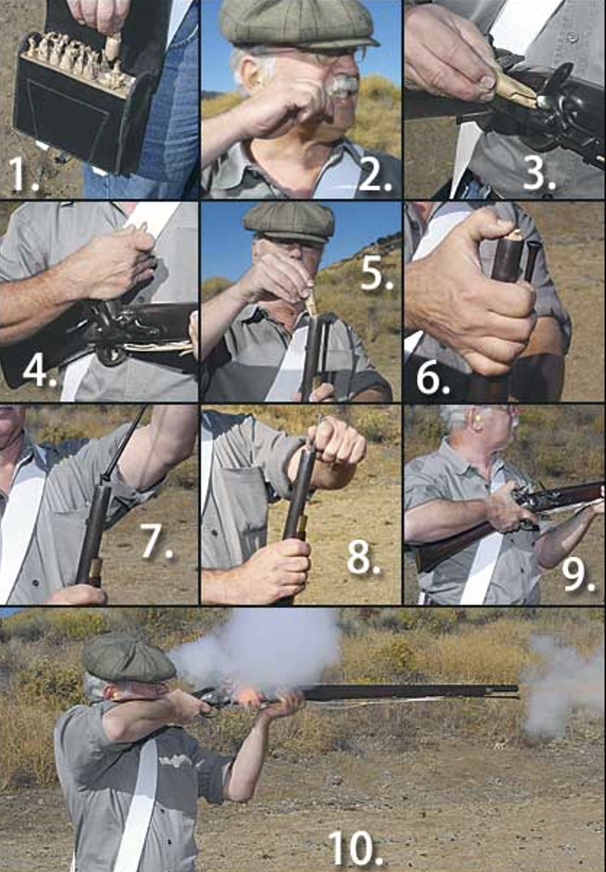
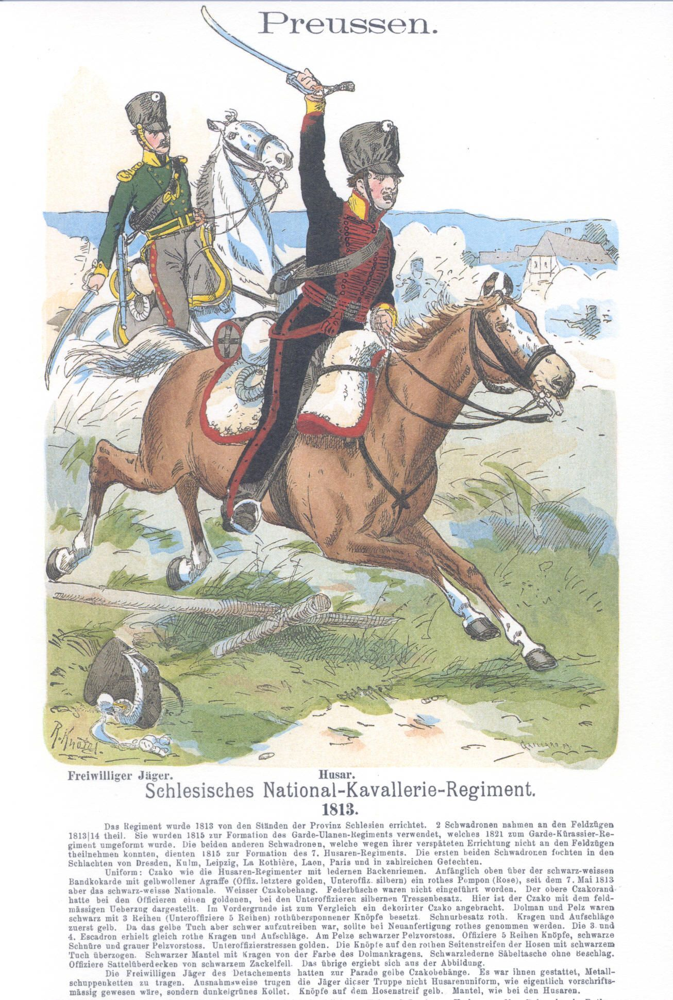
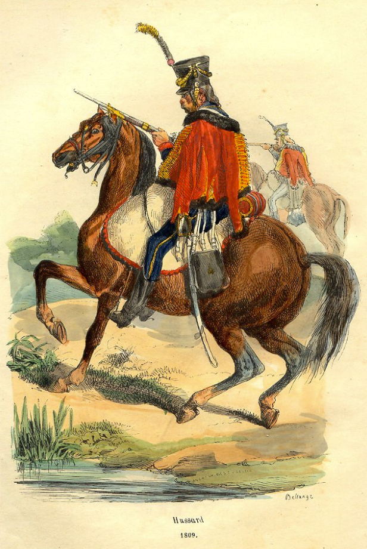
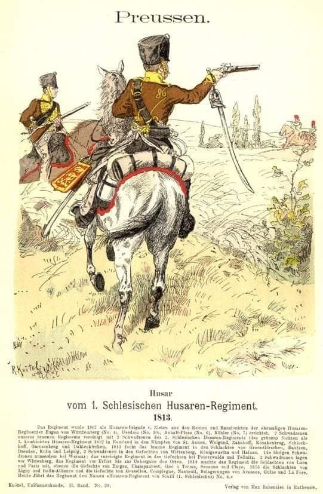

새로운 전쟁의 준비 (3) - 국민방위군(Landwehr)의 실상
게시: 2023-10-30T06:30:46+09:00
여기서 잠깐, 국민방위군이란 정규군에 징집될 청년보다는 나이가 좀 더 많지만 중산층의 시민들이 자비로 무기와 군복을 마련하여 자발적으로 편성된 부대라고 하지 않았나요? 원래는 그랬습니다만 그건 평화시에 향토 방위 임무나 주어질 때의 이야기였습니다. 애초에 프로이센에 자비로 무기와 군복을 마련할 정도의 중산층이 그렇게 많지도 않았지만, 이제 머나먼 타향으로 떠나 무시무시한 나폴레옹군의 총검 앞에 총알받이로 뛰어들어야 할 판국인데 정든 고향과 사랑하는 가족을 뒤로 하고 자원하는 중산층의 중년 남자가 많을 리도 없었습니다. 그러다보니 실제로 편성된 국민방위군은 자원병도 아니었고 중산층도 아니었으며, 자비로 마련한 군복과 무기도 없었습니다. 현실의 이들은 그냥 누더기 같은 작업복을 입고 손에는 보병용 창을 든 중년 남자들에 불과했으며 많은 경우 구두도 없이 맨발로 걸었습니다. 아무리 준비가 부족하다고 해도 이런 상태로 전쟁터에 내보낼 수는 없었습니다. 군복과 머스켓 소총, 그리고 무엇보다 군화를 지급해야 했고, 부대가 부대로서 제대로 존재하려면 취사도구가 반드시 필요했습니다. 총이 없는 군대는 (전투가 벌어지지 않는 한) 존재할 수 있지만 먹을 것이 없는 군대는 전투가 있든 없든 3일이면 눈 녹듯이 허물어지기 마련이었으니까요. 전에는 국민방위군의 준비 상태가 중요하지는 않았습니다. 어차피 이들은 각자 고향의 수비 업무에나 배치되었으므로 실제 전투에 투입될 일도 거의 없었고, 식사도 그냥 집에서 먹고 오거나 도시락을 싸오면 되었기 때문이었습니다. 그러나 이제 이들은 정규군과 함께 원정을 떠나야 하는 입장이었습니다. 그렇지만 여전히 이들에게 지급되는 장비와 군복 등은 열악했습니다. 기본적으로 정규군에서 필요없다고 반품한 물품들만 지급되었기 때문이었습니다. 프로이센 국왕의 참모 장교인 뮈플링 대령은 프로이센 국민방위군이 사기는 매우 높지만 장비, 특히 군복 측면에서 열악하며, 심지어 러시아군에 비해서도 크게 떨어진다고 평가했습니다. 국민방위군에게 지급된 군복은 대개 품질이 조악한 옷감으로 대충 만든 것이라서 비를 한번 맞으면 다 줄어들기 쉽상이었습니다. 덕분에 대부분의 방위군 병사들은 너무 작은 자켓과 바지를 입고 있어서 보기에도 우스꽝스러웠고 움직임에도 매우 불편했습니다. 군화는 군대의 기동성에 정말 중요한 물건이었음에도 대부분 불량품이라서, 노동자 농민 출신이 대부분인 병사들은 차라리 맨발로 걷겠다고 말할 정도였습니다. 군복 상의 위에 입을 코트는 아예 지급이 되지 않았고 취사 도구는 무척 귀했으며, 배낭 대신 그냥 삼베 자루가 지급되었습니다. 제일 심각한 부분은 무기였습니다. 하르덴베르크가 영국인들에게 굽신거리고 여기저기에 손을 벌려 미친 듯이 머스켓 소총을 긁어모았지만, 전체 국민방위군 병력 중 1/3은 여전히 머스켓 소총 대신 보병 창을 들고 있었습니다. 이들은 결국 그 상태 그대로 출정을 해야 했는데, 향후 전투가 벌어지면 적에게서 뺴앗든가 혹은 쓰러진 아군에게서 회수한 소총을 주기로 했습니다. 당연히 대부분의 병사들은 사격 훈련을 받지 못한 상태로 전선에 투입되었습니다. 이건 심각한 문제였습니다. 어차피 머스켓 소총의 명중률은 크게 떨어졌으므로 사격 정확도는 중요하지 않았지만, 종이 탄약포를 이로 물어 뜯어 머스켓 소총에 장전하는 것은 나름 복잡하고 시간이 많이 걸리는 일이기 떄문이었습니다. 이렇게 장전 방법을 배운 적이 없었기 때문에, 적지 않은 경우 이런 병사들은 방아쇠를 당기기는 했지만 총알이 튀어나가지는 않았습니다.

(덕중의 덕은 양덕. 나폴레옹 전쟁 당시 영국군이 사용한 표준 머스켓 소총인 Brown Bess의 장전 절차를 보여주는 사진입니다. 매우 숙련된 병사라면 1분에 2발 정도를 쏠 수 있었습니다. 특히 3번, 뇌관접시(priming pan)에 약간의 흑색화약을 붓는 과정을 제대로 해내지 못하면 아무리 방아쇠를 당겨도 발사가 되지 않았습니다. 그런 식으로, 서툴고 당황한 병사가 이전에 장탄한 탄환이 발사 되지도 않은 총에 자꾸 새로운 총알만 구겨 넣어서 총열에 발사되지 않은 탄환 5~6개가 일렬로 늘어선 총도 종종 있었다고 합니다.)
이렇게 기본적인 무기 훈련이 안 된 것은 총도 탄약도 부족했지만 제대로 된 교관도 없었기 때문이었습니다. 정규군은 그래도 늙은 퇴역 장교들까지 긁어모아 배치했지만, 국민방위군 장교들은 그냥 좀 더 점잖은 계층 출신이었을 뿐 사실상 일반 병사들과 별다른 차이가 없는 민간인에 불과했기 때문이었습니다. 사실 당시 전투에서의 실제 부대 운영은 장교가 아니라 부사관들이 수행했기 때문에 장교의 중요성은 떨어졌습니다만, 그렇다고 국민방위군 부사관들이 우수한 것도 아니었습니다. 가령 요크의 군단에 합류한 4개 국민방위군 중대의 부사관 중 글을 쓸 줄 아는 사람은 하나도 없었습니다. 병사들 자신도 그다지 훌륭한 자원이라고 하기는 좀 그랬습니다. 슐레지엔 섬유 공업 지역의 가난한 노동자 계급에서 주로 징집한 이 국민방위군 병사들은 체격과 체력면에 다른 지방에서 징집된 농민 출신 병사들에 비해 크게 뒤떨어졌습니다. 그나마 다행인 것은 수행하는데 아무 돈이나 장비가 필요 없었던 제식 훈련만은 죽어라 시켜서, 전장에서의 대오 변경 등은 거의 정규군 수준으로 끌어올렸다고 합니다. 병사들의 이런 질적 문제는 보병 대대보다 특히 기병대에서 심각했습니다. 프로이센의 기병대에는 크게 구분하여 정규기병대(Linie Kavallerie), 방위기병대(Landwehr Kavallerie), 그리고 국민기병대(National Kavallerie)의 세 종류가 있었습니다. 여기서 국민기병대라는 것은 진정한 의미에서 스스로 마련한 말과 안장을 들고 자원한 병사들로 이루어진 부대였습니다. 그렇게 보면 국민기병대가 열의가 넘치고 집안도 넉넉한 가장 우수한 기병대 같지만 실제로는 무척 달랐습니다. 그나이제나우의 편지와 보고서를 읽어 보면 프로이센 청년들 모두가 애국심에 불타서 반(反)나폴레옹 전투에 열광적으로 참전하는 것처럼 보이지만, 에나 지금이나 군에 가서 총알받이가 되는 것은 다들 싫어하기 마련입니다. 국민기병대는 실제로는 부자집 아들이 병역을 피하기 위해 당국과 협의 하에 가난한 소작농이나 노동자에게 말과 안장을 주어 등 떠밀어 내보낸 사람들로 만들어졌습니다.

(1813년 슐레지엔에서 모병된 국민기병대의 모습입니다. 이 그림만 보면 멋진 군복을 입고 멋진 말을 탄 멋진 모습이지만, 실상은 좀 달랐다고 합니다.)
대신 그렇게 부자들이 수치심을 돈으로 가리기 위해 만들어진 부대이다보니 후원은 넉넉한 편이라서 국민기병대의 말과 장비는 괜찮은 편이었습니다. 어떤 경우엔 군마들의 상태가 정규 기병대보다 더 좋을 정도였지만 정작 대원들의 말 사육에 대한 지식이나 승마 솜씨가 떨어져 군마들의 비전투 손실율은 갈 수록 많아졌습니다. 말은 의외로 섬세한 동물이라서 세심하게 보살펴 주지 않으면 쉽게 다치고 병들기 때문이었습니다. 정규기병대도 말이 부족한 상황에서 이렇게 제대로 말을 다룰 줄 모르는 국민기병대가 더 좋은 말을 갖춘 것은 사실상 국가적 낭비였습니다. 무장도 마찬가지였습니다. 좀더 부유했던 지역인 메클렌부르크-슈트렐리츠(Mecklenburg-Strelitz) 경기병대는 기병총(Karabiner) 1정과 함께 권총 2자루씩을 휴대했습니다. 더 가난한 지역이었던 동프로이센 기병대는 일부 대원들만 권총을 소지했고 대부분은 그냥 기병창 한 자루씩만 갖출 수 있었습니다.

(기병용 소총인 카빈은 그냥 말 위에서 장전하기 쉽게 총신이 짧은 머스켓 소총입니다. 이 그림은 기병용 소총을 들고 있는 프랑스 경기병을 그린 모습입니다만, 경기병이 카빈 소총을 든 경우는 실제로는 거의 없었습니다. 프랑스군에는 기총기병(carabinier)이라는 기병이 따로 있어서, 이름만 보면 기병총을 든 기병처럼 들리지만 실제로는 그냥 덩치가 큰 병사와 덩치가 큰 말들을 골라 뽑은 기병을 기총기병이라고 불렀습니다. 카빈 소총을 든 기병은 주로 용기병(dragoon)이었는데, 이들은 기병이라기보다는 기마 보병에 가까워, 평소 말을 타고 이동하다 적을 만나면 말에서 내려 총을 들고 싸우는 부대였습니다.)

(1813년 슐레지엔에서 편성된 프로이센 경기병대의 멋진 모습입니다. 군도는 손목에 끈으로 걸어서 늘어뜨린 채로 권총을 겨누고 있는 모습이 인상적입니다만, 실제로 당시 전투에서 기병대가 권총을 사용하는 경우는 그다지 많지 않았다고 합니다. 이유는 긴 머스켓 소총의 명중률도 크게 떨어지는데 흔들리는 말 위에서 쏘는 권총의 명중률은 너무 형편 없었고, 또 말 위에서 재장전하는 것이 사실상 불가능했기 떄문이었습니다. 결정적으로 병사들 자신이 권총의 소지를 무척 꺼렸다고 하는데, 이유는 무겁기만 한데다 무엇보다 검열할 때 골칫덩어리가 된다는 지극히 현실적인 이유에서였습니다.)
정규기병대와 국민기병대 사이에 낀 방위기병대는 상태가 더욱 좋지 않아서, 그야말로 아무 거나 말이라고 불리는 짐승들을 끌어모아 편성되었습니다. 원래 마차를 끄는 짐말과 사람이 타는 승마용 말은 구별되어야 했는데, 방위기병대에는 늙은 말, 마차를 끌던 말, 심지어 아직 길이 들지 않은 말로 채워졌습니다. 그러다보니 방위기병대가 바람처럼 마을 달려 적의 밀집 보병대를 깨뜨리는 일은 상상하기 어려웠고, 이들은 달리는 말에서 떨어지지만 않아도 다행인 형편이었습니다. 무장도 형편 없어서, 정규기병대원 중 권총 2자루를 소지한 자는 1자루를 방위기병대에게 양보해야 했습니다. 전체적으로 보면 총기를 가진 기병대원은 전체의 1/4 정도였습니다. 포병대는 당시 유럽 모든 국가의 군대에서 가장 엘리트로 편성되는 부대였지만, 역시 장비를 갖추는 데 어려움을 많이 겪었습니다. 대포의 수는 그럭저럭 채웠지만, 7월 말까지도 많은 포병대원들이 사실상 벌거벗은 상태로 있다는 보고서가 올라올 정도였습니다. 그나마 아직 여름인 것이 다행이었습니다. (다음 편에 계속)
Source : The Life of Napoleon Bonaparte, by William Milligan Sloane Napoleon and the Struggle for Germany, by Leggiere, Michael V https://www.pinterest.co.kr/pin/320740804728693484/ https://www.pinterest.co.kr/pin/329396160244642730/
https://www.rifleshootermag.com/editorial/featured_rifles_bess_092407/83445
https://creazilla.com/nodes/7047375-napoleon-hussard-by-bellange-illustration